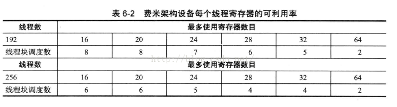
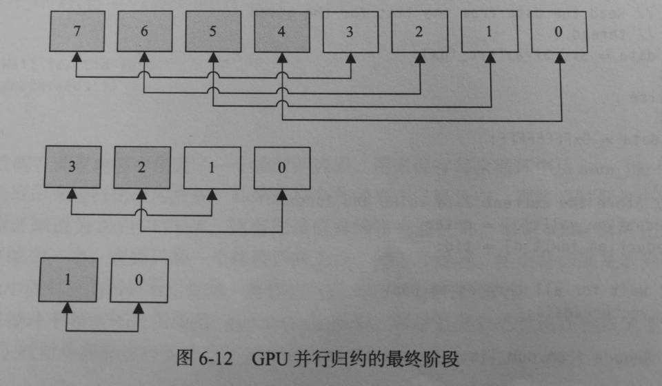

<!DOCTYPE html>
<html>
<head><meta name="generator" content="Hexo 3.8.0">
  <!-- hexo-inject:begin --><!-- hexo-inject:end --><meta charset="utf-8">
  
  <title>cuda内存管理总结(一) | 浙江大学超算队</title>
  <meta name="viewport" content="width=device-width, initial-scale=1, maximum-scale=1">
  
  <meta name="keywords" content="TechCUDA">
  
  
  
  
  <meta name="description" content="本文将探讨CUDA中的内存管理机制。">
<meta name="keywords" content="Tech,CUDA">
<meta property="og:type" content="article">
<meta property="og:title" content="CUDA内存管理总结(一)">
<meta property="og:url" content="https://zjusct.github.io/2018/11/25/cuda/index.html">
<meta property="og:site_name" content="浙江大学超算队">
<meta property="og:description" content="本文将探讨CUDA中的内存管理机制。">
<meta property="og:locale" content="default">
<meta property="og:image" content="https://zjusct.github.io/2018/11/25/cuda/1.png">
<meta property="og:image" content="https://zjusct.github.io/2018/11/25/cuda/2.png">
<meta property="og:updated_time" content="2019-05-31T15:04:27.493Z">
<meta name="twitter:card" content="summary">
<meta name="twitter:title" content="CUDA内存管理总结(一)">
<meta name="twitter:description" content="本文将探讨CUDA中的内存管理机制。">
<meta name="twitter:image" content="https://zjusct.github.io/2018/11/25/cuda/1.png">
  

  

  <link rel="icon" href="/css/images/ZJUSCT_Icon_Black.png">
  <link rel="apple-touch-icon" href="/css/images/ZJUSCT_Icon_Black.png">
  
    <link href="//fonts.googleapis.com/css?family=Source+Code+Pro" rel="stylesheet" type="text/css">
  
  <link href="https://fonts.googleapis.com/css?family=Open+Sans|Montserrat:700" rel="stylesheet" type="text/css">
  <link href="https://fonts.googleapis.com/css?family=Roboto:400,300,300italic,400italic" rel="stylesheet" type="text/css">
  <link href="//cdn.bootcss.com/font-awesome/4.6.3/css/font-awesome.min.css" rel="stylesheet">
  <style type="text/css">
    @font-face{font-family:futura-pt;src:url(https://use.typekit.net/af/9749f0/00000000000000000001008f/27/l?subset_id=2&fvd=n5) format("woff2");font-weight:500;font-style:normal;}
    @font-face{font-family:futura-pt;src:url(https://use.typekit.net/af/90cf9f/000000000000000000010091/27/l?subset_id=2&fvd=n7) format("woff2");font-weight:500;font-style:normal;}
    @font-face{font-family:futura-pt;src:url(https://use.typekit.net/af/8a5494/000000000000000000013365/27/l?subset_id=2&fvd=n4) format("woff2");font-weight:lighter;font-style:normal;}
    @font-face{font-family:futura-pt;src:url(https://use.typekit.net/af/d337d8/000000000000000000010095/27/l?subset_id=2&fvd=i4) format("woff2");font-weight:400;font-style:italic;}</style>
  <link rel="stylesheet" href="../../../../css/style.css">

  <script src="../../../../js/jquery-3.1.1.min.js"></script>
  <script src="../../../../js/bootstrap.js"></script>

  <!-- Bootstrap core CSS -->
  <link rel="stylesheet" href="/css/bootstrap.css">

  
    <link rel="stylesheet" href="../../../../css/dialog.css">
  

  

  
    <link rel="stylesheet" href="/css/header-post.css"><!-- hexo-inject:begin --><!-- hexo-inject:end -->
  

  
  
  

</head>
</html>


  <body data-spy="scroll" data-target="#toc" data-offset="50">


  

  
    <!-- hexo-inject:begin --><!-- hexo-inject:end --><div id="container">
      <div id="wrap">
        
          <header style="height:75px;" class="main_header">

    <div id="allheader" class="navbar navbar-default navbar-static-top" role="navigation">
        <div class="navbar-inner">

          <div class="container" style="height: 75px;">
            <button type="button" class="navbar-toggle" data-toggle="collapse" data-target=".navbar-collapse">
              <span class="sr-only">Toggle navigation</span>
              <span class="icon-bar"></span>
              <span class="icon-bar"></span>
              <span class="icon-bar"></span>
            </button>

            
              <a class="brand" style="
                 margin-top: 0px;" href="#" data-toggle="modal" data-target="#myModal">
                  
              </a>
            

            <div class="navbar-collapse collapse">
              <ul class="hnav navbar-nav">
                
                  <li> <a class="main-nav-link" href="../../../../index.html">Home</a> </li>
                
                  <li> <a class="main-nav-link" href="../../../../archives">Articles</a> </li>
                
                  <li> <a class="main-nav-link" href="../../../../about">About</a> </li>
                
                  <li> <a class="main-nav-link" href="../../../../teamIntro">TeamIntro</a> </li>
                
                  <li> <a class="main-nav-link" href="../../../../contact">JoinUs</a> </li>
                
                  <li><div id="search-form-wrap">

    <form class="search-form">
        <input type="text" class="ins-search-input search-form-input" placeholder>
        <button type="submit" class="search-form-submit"></button>
    </form>
    <div class="ins-search">
    <div class="ins-search-mask"></div>
    <div class="ins-search-container">
        <div class="ins-input-wrapper">
            <input type="text" class="ins-search-input" placeholder="Type something...">
            <span class="ins-close ins-selectable"><i class="fa fa-times-circle"></i></span>
        </div>
        <div class="ins-section-wrapper">
            <div class="ins-section-container"></div>
        </div>
    </div>
</div>
<script>
(function (window) {
    var INSIGHT_CONFIG = {
        TRANSLATION: {
            POSTS: 'Posts',
            PAGES: 'Pages',
            CATEGORIES: 'Categories',
            TAGS: 'Tags',
            UNTITLED: '(Untitled)',
        },
        ROOT_URL: '/',
        CONTENT_URL: '../../../../content.json',
    };
    window.INSIGHT_CONFIG = INSIGHT_CONFIG;
})(window);
</script>
<script src="../../../../js/insight.js"></script>

</div></li>
            </ul></div>
          </div>

      </div>
    </div>

</header>

<div style="height:75px;witdh:100;">


</div>
        

        <div id="content" class="outer">
          
            <section id="main" style="float:none;"><article id="post-cuda" style="width: 75%; float:left;" class="article article-type-post" itemscope itemprop="blogPost">
    <div id="articleInner" class="article-inner">
        
        
        <header class="article-header">
            
  
    <h1 class="thumb" itemprop="name">
      CUDA内存管理总结(一)
    </h1>
  

        </header>
        
        <div class="article-meta">
            
	<a href class="article-date">
	  <time datetime="2018-11-24T16:46:08.000Z" itemprop="datePublished">2018-11-25</time>
	</a>

            
            
	<a class="article-author">
		<span id="postAuthor">
			Author: 潘薇鸿
		</span>
	</a>

            <div class="article-article-tags-box">
              <ul class="article-tag-list"><li class="article-tag-list-item"><a class="article-tag-list-link" href="../../../../tags/CUDA/">CUDA</a></li><li class="article-tag-list-item"><a class="article-tag-list-link" href="../../../../tags/Tech/">Tech</a></li></ul>
            </div>
        </div>
        <div class="article-entry" itemprop="articleBody">
            
            <p>本文将探讨CUDA中的内存管理机制。</p>
<a id="more"></a>

<h2 id="一、寄存器"><a href="#一、寄存器" class="headerlink" title="一、寄存器"></a>一、寄存器</h2><p>​    GPU的每个SM（流多处理器）都有上千个寄存器，每个SM都可以看作是一个多线程的CPU核，但与一般的CPU拥有二、四、六或八个核不同，一个GPU可以有<strong>N个SM核</strong>；同样，与一般的CPU核支持一到两个硬件线程不同，每个SM核可能有<strong>8~192个SP</strong>（流处理器），亦即每个SM能同时支持这么多个硬件线程。事实上，一台GPU设备的所有SM中活跃的线程数目通常数以万计。</p>
<h3 id="1-1-寄存器映射方式"><a href="#1-1-寄存器映射方式" class="headerlink" title="1.1 寄存器映射方式"></a>1.1 寄存器映射方式</h3><p>​    <strong>CPU处理多线程</strong>：进行上下文切换，使用寄存器重命名机制，将当前所有寄存器的状态保存到栈（系统内存），再从栈中恢复当前需要执行的新线程在上一次的执行状态。这些操作通常花费上百个CPU时钟周期，有效工作吞吐量低。</p>
<p>​    <strong>GPU处理多线程</strong>：与CPU相反，GPU利用多线程隐藏了内存获取与指令执行带来的延迟；此外，GPU不再使用寄存器重命名机制，而是尽可能为每个线程分配寄存器，从而上下文切换就变成了寄存器组选择器（或指针）的更新，几乎是零开销。</p>
<h3 id="1-2-寄存器空间大小"><a href="#1-2-寄存器空间大小" class="headerlink" title="1.2 寄存器空间大小"></a>1.2 寄存器空间大小</h3><p>​    每个SM可提供的寄存器空间大小分别有8KB、16KB、32KB和64KB，每个线程中的每个变量占用一个寄存器，因而总共会占用N个寄存器，N代表调度的线程数量。当线程块上的寄存器数目是允许的最大值时，每个SM会只处理一个线程块。</p>
<h3 id="1-3-SM调度线程、线程块"><a href="#1-3-SM调度线程、线程块" class="headerlink" title="1.3 SM调度线程、线程块"></a>1.3 SM调度线程、线程块</h3><p>​    由于大多数内核对寄存器的需求量很低，所以可以通过降低寄存器的需求量来增加SM上线程块的调度数量，从而提高运行的线程总数，根据线程级并行<strong>“占用率越高，程序运行越快”</strong>，可以实现运行效率的优化。当线程级并行（<em>Thread-Level Parallelism</em>，TLP）足以隐藏存储延迟时会达到一个临界点，此后想要继续提高程序性能，可以在单个线程中实现指令级的并行（<em>Instruction-Level Parallelism</em>，ILP），即单线程处理多数据。</p>
<p>​    但在另一方面，每个SM所能调度的线程总量是有限制的，因此当线程总量达到最大时，再减少寄存器的使用量就无法达到提高占有率的目的（如下表中寄存器数目由20减小为16，线程块调度数量不变），所以在这种情况下，应增加寄存器的使用量到临界值。</p>


<h3 id="1-4-寄存器优化方式"><a href="#1-4-寄存器优化方式" class="headerlink" title="1.4 寄存器优化方式"></a>1.4 寄存器优化方式</h3><p>​    1）将中间结果累积在寄存器而非全局内存中。尽量避免全局内存的写操作，因为如果操作聚集到同一块内存上，就会强制硬件对内存的操作序列化，导致严重的性能降低；</p>
<p>​    2）循环展开。循环一般非常低效，因为它们会产生分支，造成流水线停滞。</p>
<h3 id="1-5-总结"><a href="#1-5-总结" class="headerlink" title="1.5 总结"></a>1.5 总结</h3><p>​    使用寄存器可以有效消除内存访问，或提供额外的ILP，以此实现GPU内核函数的加速，这是最为有效的方法之一。</p>
<h2 id="二、共享内存"><a href="#二、共享内存" class="headerlink" title="二、共享内存"></a>二、共享内存</h2><h3 id="2-1-基本概念"><a href="#2-1-基本概念" class="headerlink" title="2.1 基本概念"></a>2.1 基本概念</h3><p>​    1、共享内存实际上是可以受用户控制的一级缓存，每个SM中的一级缓存和共享内存共用一个64KB的内存段。</p>
<p>​    2、共享内存的延迟很低，大约有1.5TB/s的带宽，而全局内存仅为160GB/s，换言之，有效利用共享内存有可能获得7倍的加速比。但它的速度依然只有寄存器的十分之一，并且共享内存的速度几乎在所有GPU中都相同，因为它由核时钟频率驱动。</p>
<p>​    3、只有当数据重复利用、全局内存合并，或者线程之间有共享数据（例如同时访问相同地址的存储体）的时候使用共享内存才更合适，否则将数据直接从全局内存加载到寄存器性能会更好。</p>
<p>​    4、共享内存是基于存储体切换的架构（<em>bank-switched architecture</em>），费米架构的设备上有32个存储体。无论有多少线程发起操作，<strong>每个</strong>存储体<strong>每个</strong>周期只执行<strong>一次</strong>操作。因此，如果线程束中的每个线程各访问一个存储体，那么所有线程的操作都可以在一个周期内同时执行，且所有操作都是独立互不影响的。此外，如果所有线程同时访问同一地址的存储体，会触发一个广播机制到线程束中的每个线程中。但是，如果是其他的访问方式，线程访问共享内存就需要排队，即一个线程访问时，其他线程将阻塞闲置。因此很重要的一点时，应该尽可能地获得<strong>零存储体冲突</strong>的共享内存访问。</p>
<h3 id="2-2-Example：使用共享内存排序"><a href="#2-2-Example：使用共享内存排序" class="headerlink" title="2.2 Example：使用共享内存排序"></a>2.2 Example：使用共享内存排序</h3><h2 id="2-2-1-归并排序"><a href="#2-2-1-归并排序" class="headerlink" title="2.2.1 归并排序"></a>2.2.1 归并排序</h2><p>​    假设待排序的数据集大小为N，现将数据集进行划分。根据归并排序的划分原则，最后每个数据包中只有两个数值需要排序，因此，在这一阶段，最大并行度可达到 $N \over 2$ 个独立线程。例如，处理一个大小为512KB的数据集，共有128K个32位的元素，那么最多可以使用的线程个数为64K个（N=128K，N/2=64K），假设GPU上有16个SM，每个SM最多支持1536个线程，那么每个GPU上最多可以支持24K个线程，因此，按照这样划分，64K的数据对只需要2.5次迭代即可完成排序操作。</p>
<p>​    但是，如果采用上述划分排序方式再进行合并，我们需要从每个排好序的数据集中读出元素，对于一个64K的集合，需要64K次读操作，即从内存中获取256MB的数据，显然当数据集很大的时候不合适。</p>
<p>​    因此，我们采用通过限制对原始问题的迭代次数，通过基于共享内存的分解方式来获得更好的合并方案。因为在费米架构的设备上有32个存储体，即对应32个线程，所以当需要的线程数量减少为32（一个线程束）时，停止迭代，于是共需要线程束4K个（128K/32=4K），又因为GPU上有16个SM，所以这将为每个SM分配到256个线程束。然而由于费米架构设备上的每个SM最多只能同时执行48个线程束，因此多个块将被循环访问。</p>
<p>​    通过将数据集以每行32个元素的方式在共享内存中进行分布，每列为一个存储体，即可得到零存储体冲突的内存访问，然后对每一列实施相同的排序算法。（或者也可以理解为桶排序呀）</p>
<p>​    然后再进行列表的合并。</p>
<h2 id="2-2-2-合并列表"><a href="#2-2-2-合并列表" class="headerlink" title="2.2.2 合并列表"></a>2.2.2 合并列表</h2><p>​    先从串行合并任意数目的有序列表看起：</p>
<figure class="highlight c"><table><tr><td class="gutter"><pre><span class="line">1</span><br><span class="line">2</span><br><span class="line">3</span><br><span class="line">4</span><br><span class="line">5</span><br><span class="line">6</span><br><span class="line">7</span><br><span class="line">8</span><br><span class="line">9</span><br><span class="line">10</span><br><span class="line">11</span><br><span class="line">12</span><br><span class="line">13</span><br><span class="line">14</span><br><span class="line">15</span><br><span class="line">16</span><br><span class="line">17</span><br><span class="line">18</span><br><span class="line">19</span><br><span class="line">20</span><br><span class="line">21</span><br><span class="line">22</span><br><span class="line">23</span><br><span class="line">24</span><br><span class="line">25</span><br><span class="line">26</span><br><span class="line">27</span><br><span class="line">28</span><br><span class="line">29</span><br><span class="line">30</span><br><span class="line">31</span><br><span class="line">32</span><br><span class="line">33</span><br><span class="line">34</span><br><span class="line">35</span><br><span class="line">36</span><br><span class="line">37</span><br><span class="line">38</span><br><span class="line">39</span><br><span class="line">40</span><br><span class="line">41</span><br><span class="line">42</span><br><span class="line">43</span><br><span class="line">44</span><br><span class="line">45</span><br><span class="line">46</span><br></pre></td><td class="code"><pre><span class="line"><span class="function"><span class="keyword">void</span> <span class="title">merge_array</span><span class="params">(<span class="keyword">const</span> u32 *<span class="keyword">const</span> src_array, <span class="comment">//待排序数组</span></span></span></span><br><span class="line"><span class="function"><span class="params">                 u32 *<span class="keyword">const</span> dest_array, <span class="comment">//排序后的数组</span></span></span></span><br><span class="line"><span class="function"><span class="params">                 <span class="keyword">const</span> u32 num_lists, <span class="comment">//列表总数</span></span></span></span><br><span class="line"><span class="function"><span class="params">                 <span class="keyword">const</span> u32 num_elements)</span> <span class="comment">//数据总数</span></span></span><br><span class="line"><span class="function"></span>&#123;</span><br><span class="line">	<span class="keyword">const</span> u32 num_elements_per_list = (num_elements / num_lists);<span class="comment">//每个列表中的数据个数</span></span><br><span class="line">    u32 list_indexes[MAX_NUM_LISTS]; <span class="comment">//所有列表当前所在的元素下标</span></span><br><span class="line">    <span class="keyword">for</span>(u32 <span class="built_in">list</span> = <span class="number">0</span>; <span class="built_in">list</span> &lt; num_lists; <span class="built_in">list</span>++)</span><br><span class="line">    &#123;</span><br><span class="line">		list_indexes[<span class="built_in">list</span>] = <span class="number">0</span>;</span><br><span class="line">    &#125;</span><br><span class="line">    <span class="keyword">for</span>(u32 i = <span class="number">0</span>; i&lt;num_elements; i++)</span><br><span class="line">    &#123;</span><br><span class="line">		dest_array[i] = find_min(scr_array, </span><br><span class="line">                                 list_indexes, </span><br><span class="line">                                 num_lists, </span><br><span class="line">                                 num_elements_per_list);</span><br><span class="line">	&#125;</span><br><span class="line">&#125;</span><br><span class="line"></span><br><span class="line"><span class="function">u32 <span class="title">find_min</span><span class="params">(<span class="keyword">const</span> u32*cosnt src_array, </span></span></span><br><span class="line"><span class="function"><span class="params">             u32 *<span class="keyword">const</span> list_indexes, </span></span></span><br><span class="line"><span class="function"><span class="params">             <span class="keyword">const</span> u32 num_lists, </span></span></span><br><span class="line"><span class="function"><span class="params">             <span class="keyword">const</span> u32 num_elements_per_list)</span><span class="comment">//寻找num_lists个元素中的最小值</span></span></span><br><span class="line"><span class="function"></span>&#123;</span><br><span class="line">    u32 min_val = <span class="number">0xFFFFFFFF</span>;</span><br><span class="line">    u32 min_idx = <span class="number">0</span>;</span><br><span class="line">    </span><br><span class="line">    <span class="keyword">for</span>(u32 i = <span class="number">0</span>; i &lt; num_lists; i++)</span><br><span class="line">    &#123;</span><br><span class="line">		<span class="keyword">if</span>(list_indexes[i] &lt; num_elements_per_list)</span><br><span class="line">        &#123;</span><br><span class="line">			<span class="keyword">const</span> u32 src_idx = i + (list_indexes[i]*num_lists);</span><br><span class="line">             <span class="keyword">const</span> u32 data = src_array[src_idx];</span><br><span class="line">        </span><br><span class="line">        	<span class="keyword">if</span>(data &lt;= min_val)</span><br><span class="line">        	&#123;</span><br><span class="line">				min_val = data;</span><br><span class="line">           	     min_idx = i;</span><br><span class="line">        	&#125;</span><br><span class="line">        &#125;</span><br><span class="line">    &#125;</span><br><span class="line">    </span><br><span class="line">    list_indexes[min_idx]++;</span><br><span class="line">    <span class="keyword">return</span> min_val;</span><br><span class="line">&#125;</span><br></pre></td></tr></table></figure>

<p>​    将上述算法用GPU实现</p>
<figure class="highlight c"><table><tr><td class="gutter"><pre><span class="line">1</span><br><span class="line">2</span><br><span class="line">3</span><br><span class="line">4</span><br><span class="line">5</span><br><span class="line">6</span><br><span class="line">7</span><br><span class="line">8</span><br><span class="line">9</span><br><span class="line">10</span><br><span class="line">11</span><br><span class="line">12</span><br></pre></td><td class="code"><pre><span class="line">__<span class="function">global__ <span class="keyword">void</span> <span class="title">gpu_sort_array_array</span><span class="params">(u32 *<span class="keyword">const</span> data, </span></span></span><br><span class="line"><span class="function"><span class="params">                                     <span class="keyword">const</span> u32 num_lists, </span></span></span><br><span class="line"><span class="function"><span class="params">                                     <span class="keyword">const</span> u32 num_elements)</span></span></span><br><span class="line"><span class="function"></span>&#123;</span><br><span class="line">	<span class="keyword">const</span> u32 tid = (blockIdx.x * blockDim.x) + threadIdx.x;</span><br><span class="line">    __shared__ u32 sort_tmp[NUM_ELEM];</span><br><span class="line">    __shared__ u32 sort_tmp_1[NUM_ELEM];</span><br><span class="line">    </span><br><span class="line">    copy_data_to_shared(data, sort_tmp, num_lists, num_elements, tid);</span><br><span class="line">    radix_sort2(sort_tmp, num_lists, num_elements, tid, sort_tmp_1);</span><br><span class="line">    merge_array6(sort_tmp, data, num_lists, num_elements, tid);</span><br><span class="line">&#125;</span><br></pre></td></tr></table></figure>

<p>​    第一个函数的实现：</p>
<figure class="highlight c"><table><tr><td class="gutter"><pre><span class="line">1</span><br><span class="line">2</span><br><span class="line">3</span><br><span class="line">4</span><br><span class="line">5</span><br><span class="line">6</span><br><span class="line">7</span><br><span class="line">8</span><br><span class="line">9</span><br><span class="line">10</span><br><span class="line">11</span><br><span class="line">12</span><br></pre></td><td class="code"><pre><span class="line">__<span class="function">device__ <span class="keyword">void</span> <span class="title">copy_data_to_shared</span><span class="params">(<span class="keyword">const</span> u32 *<span class="keyword">const</span> data, </span></span></span><br><span class="line"><span class="function"><span class="params">                                    u32 *sort_tmp, </span></span></span><br><span class="line"><span class="function"><span class="params">                                    <span class="keyword">const</span> u32 num_lists, </span></span></span><br><span class="line"><span class="function"><span class="params">                                    <span class="keyword">const</span> u32 num_elements, </span></span></span><br><span class="line"><span class="function"><span class="params">                                    <span class="keyword">const</span> u32 tid)</span></span></span><br><span class="line"><span class="function"></span>&#123;</span><br><span class="line">    <span class="keyword">for</span>(u32 i = <span class="number">0</span>; i &lt; num_elements; i++)</span><br><span class="line">    &#123;</span><br><span class="line">		sort_tmp[i+tid] = data[i+tid]; </span><br><span class="line">    &#125;</span><br><span class="line">    __syncthreads();</span><br><span class="line">&#125;</span><br></pre></td></tr></table></figure>

<p>​    该函数中，程序按行将数据从全局内存读入共享内存。当函数调用一个子函数并传入参数时，这些参数必须以某种方式提供给被调用的函数，有两种方法可以采用。一种是通过寄存器传递所需的值，另一种方法是创建一个名为“栈帧”的内存区，但这种方法非常地不高效。出于这一原因，我们需要重新修改合并的程序(merge_array)，以避免函数调用，修改后程序如下（单线程）：</p>
<figure class="highlight c"><table><tr><td class="gutter"><pre><span class="line">1</span><br><span class="line">2</span><br><span class="line">3</span><br><span class="line">4</span><br><span class="line">5</span><br><span class="line">6</span><br><span class="line">7</span><br><span class="line">8</span><br><span class="line">9</span><br><span class="line">10</span><br><span class="line">11</span><br><span class="line">12</span><br><span class="line">13</span><br><span class="line">14</span><br><span class="line">15</span><br><span class="line">16</span><br><span class="line">17</span><br><span class="line">18</span><br><span class="line">19</span><br><span class="line">20</span><br><span class="line">21</span><br><span class="line">22</span><br><span class="line">23</span><br><span class="line">24</span><br><span class="line">25</span><br><span class="line">26</span><br><span class="line">27</span><br><span class="line">28</span><br><span class="line">29</span><br><span class="line">30</span><br><span class="line">31</span><br><span class="line">32</span><br><span class="line">33</span><br><span class="line">34</span><br><span class="line">35</span><br><span class="line">36</span><br><span class="line">37</span><br><span class="line">38</span><br></pre></td><td class="code"><pre><span class="line">__<span class="function">device__ <span class="keyword">void</span> <span class="title">merge_array1</span><span class="params">(<span class="keyword">const</span> u32 *<span class="keyword">const</span> src_array, </span></span></span><br><span class="line"><span class="function"><span class="params">                             u32 *<span class="keyword">const</span> dest_array, </span></span></span><br><span class="line"><span class="function"><span class="params">                             <span class="keyword">const</span> u32 num_lists, </span></span></span><br><span class="line"><span class="function"><span class="params">                             <span class="keyword">const</span> u32 num_elements, </span></span></span><br><span class="line"><span class="function"><span class="params">                             <span class="keyword">const</span> u32 tid)</span></span></span><br><span class="line"><span class="function"></span>&#123;</span><br><span class="line">	__shared__ u32 list_indexes[MAX_NUM_LISTS];</span><br><span class="line">    </span><br><span class="line">    lists_indexes[tid] = <span class="number">0</span>;<span class="comment">//从每个列表的第一个元素开始</span></span><br><span class="line">    __syncthreads();</span><br><span class="line">    </span><br><span class="line">    <span class="comment">//单线程</span></span><br><span class="line">    <span class="keyword">if</span>(tid == <span class="number">0</span>)</span><br><span class="line">    &#123;</span><br><span class="line">		<span class="keyword">const</span> u32 num_elements_per_list = (num_elements / num_lists);</span><br><span class="line">        <span class="keyword">for</span>(u32 i = <span class="number">0</span>; i &lt; num_elements; i++)</span><br><span class="line">        &#123;</span><br><span class="line">			u32 min_val = <span class="number">0xFFFFFFFF</span>;</span><br><span class="line">             u32 min_idx = <span class="number">0</span>;</span><br><span class="line">            </span><br><span class="line">            <span class="keyword">for</span>(u32 <span class="built_in">list</span> = <span class="number">0</span>; <span class="built_in">list</span> &lt; num_lists; <span class="built_in">list</span>++)</span><br><span class="line">   		   &#123;</span><br><span class="line">			<span class="keyword">if</span>(list_indexes[<span class="built_in">list</span>] &lt; num_elements_per_list)</span><br><span class="line">        	&#123;</span><br><span class="line">			   <span class="keyword">const</span> u32 src_idx = i + (list_indexes[i]*num_lists);</span><br><span class="line">             	<span class="keyword">const</span> u32 data = src_array[src_idx];</span><br><span class="line">        		<span class="keyword">if</span>(data &lt;= min_val)</span><br><span class="line">        		&#123;</span><br><span class="line">					min_val = data;</span><br><span class="line">           	     	 min_idx = i;</span><br><span class="line">                &#125;</span><br><span class="line">        	&#125;</span><br><span class="line">          &#125;</span><br><span class="line">          list_indexes[min_idx]++;</span><br><span class="line">          dest_array[i]=min_val;</span><br><span class="line">       &#125;</span><br><span class="line">    &#125;</span><br><span class="line">&#125;</span><br></pre></td></tr></table></figure>

<p>​    这里只用一个线程进行合并，但显然，为了获得更好的性能，一个线程是远远不够的。因为数据被写到一个单一的列表中，所以多个线程必须进行某种形式的合作。</p>
<figure class="highlight c"><table><tr><td class="gutter"><pre><span class="line">1</span><br><span class="line">2</span><br><span class="line">3</span><br><span class="line">4</span><br><span class="line">5</span><br><span class="line">6</span><br><span class="line">7</span><br><span class="line">8</span><br><span class="line">9</span><br><span class="line">10</span><br><span class="line">11</span><br><span class="line">12</span><br><span class="line">13</span><br><span class="line">14</span><br><span class="line">15</span><br><span class="line">16</span><br><span class="line">17</span><br><span class="line">18</span><br><span class="line">19</span><br><span class="line">20</span><br><span class="line">21</span><br><span class="line">22</span><br><span class="line">23</span><br><span class="line">24</span><br><span class="line">25</span><br><span class="line">26</span><br><span class="line">27</span><br><span class="line">28</span><br><span class="line">29</span><br><span class="line">30</span><br><span class="line">31</span><br><span class="line">32</span><br><span class="line">33</span><br><span class="line">34</span><br><span class="line">35</span><br><span class="line">36</span><br><span class="line">37</span><br><span class="line">38</span><br><span class="line">39</span><br><span class="line">40</span><br><span class="line">41</span><br><span class="line">42</span><br><span class="line">43</span><br><span class="line">44</span><br><span class="line">45</span><br><span class="line">46</span><br><span class="line">47</span><br><span class="line">48</span><br><span class="line">49</span><br><span class="line">50</span><br><span class="line">51</span><br><span class="line">52</span><br><span class="line">53</span><br><span class="line">54</span><br><span class="line">55</span><br><span class="line">56</span><br><span class="line">57</span><br><span class="line">58</span><br><span class="line">59</span><br><span class="line">60</span><br><span class="line">61</span><br><span class="line">62</span><br></pre></td><td class="code"><pre><span class="line">__<span class="function">device__ <span class="keyword">void</span> <span class="title">merge_array6</span><span class="params">(<span class="keyword">const</span> u32 *<span class="keyword">const</span> src_array, </span></span></span><br><span class="line"><span class="function"><span class="params">                             u32 *<span class="keyword">const</span> dest_array, </span></span></span><br><span class="line"><span class="function"><span class="params">                             <span class="keyword">const</span> u32 num_lists, </span></span></span><br><span class="line"><span class="function"><span class="params">                             <span class="keyword">const</span> u32 num_elements, </span></span></span><br><span class="line"><span class="function"><span class="params">                             <span class="keyword">const</span> u32 tid)</span></span></span><br><span class="line"><span class="function"></span>&#123;</span><br><span class="line">    <span class="comment">//每个列表分到的元素个数</span></span><br><span class="line">	<span class="keyword">const</span> u32 num_elements_per_list = (num_elements / num_lists);</span><br><span class="line">    </span><br><span class="line">    <span class="comment">//创建一个共享列表数组，用来储存当前线程所访问的列表元素下标</span></span><br><span class="line">    __shared__ u32 list_indexes[MAX_NUM_LISTS];</span><br><span class="line">    list_indexes[tid] = <span class="number">0</span>;</span><br><span class="line">    </span><br><span class="line">    <span class="comment">//创建所有线程共享的最小值与最小值线程号</span></span><br><span class="line">    __shared__ u32 min_val;</span><br><span class="line">    __shared__ u32 min_tid;</span><br><span class="line">    __syncthreads();</span><br><span class="line">    </span><br><span class="line">    <span class="keyword">for</span>(u32 i=<span class="number">0</span>; i&lt;num_elements; i++)</span><br><span class="line">    &#123;   </span><br><span class="line">        u32 data;</span><br><span class="line">        <span class="comment">//如果当前列表还未被读完，则从中读取数据</span></span><br><span class="line">        <span class="keyword">if</span>(list_indexes[tid] &lt; num_elements_per_list);</span><br><span class="line">        &#123;</span><br><span class="line">             <span class="comment">//计算出当前元素在原数组中的下标</span></span><br><span class="line">			<span class="keyword">const</span> u32 src_idx = tid + (list_indexes[tid] * num_lists);</span><br><span class="line">             data = src_array[src_idx];</span><br><span class="line">        &#125;</span><br><span class="line">        <span class="keyword">else</span></span><br><span class="line">        &#123;</span><br><span class="line">			data = <span class="number">0xFFFFFFFF</span>;</span><br><span class="line">        &#125;</span><br><span class="line">        </span><br><span class="line">        <span class="comment">//用零号线程来初始化最小值与最小值线程号</span></span><br><span class="line">        <span class="keyword">if</span>(tid == <span class="number">0</span>)</span><br><span class="line">        &#123;</span><br><span class="line">			min_val = <span class="number">0xFFFFFFFF</span>;</span><br><span class="line">             min_tid = <span class="number">0xFFFFFFFF</span>;</span><br><span class="line">        &#125;</span><br><span class="line">        __syncthreads();</span><br><span class="line">        </span><br><span class="line">        <span class="comment">//让所有线程都尝试将它们现在手上有的值写入min_val，但只有最小的数据会被保留</span></span><br><span class="line">        <span class="comment">//利用__syncthreads()确保每个线程都执行了该操作</span></span><br><span class="line">        atomicMin(&amp;min_val, data);</span><br><span class="line">        __syncthreads();</span><br><span class="line">        </span><br><span class="line">        <span class="comment">//在所有data==min_val的线程中，选取最小线程号写入min_tid</span></span><br><span class="line">        <span class="keyword">if</span>(min_val == data)</span><br><span class="line">        &#123;</span><br><span class="line">			atomicMin(&amp;min_tid, tid);</span><br><span class="line">        &#125;</span><br><span class="line">        __syncthreads();</span><br><span class="line">        </span><br><span class="line">        <span class="comment">//将满足要求的线程所在列表的当前元素往后移一位，进行下一轮比较</span></span><br><span class="line">        <span class="comment">//并将筛选结果存入结果数组dest_array</span></span><br><span class="line">        <span class="keyword">if</span>(tid == min_tid)</span><br><span class="line">        &#123;</span><br><span class="line">			list_indexes[tid]++;</span><br><span class="line">             dest_array[i] = data;</span><br><span class="line">        &#125;</span><br><span class="line">    &#125;</span><br><span class="line">&#125;</span><br></pre></td></tr></table></figure>

<p>​    上面的函数中将num_lists个线程进行合并操作，但只用了一个线程一次将结果写入结果数据数组中，保证了结果的正确性，不会引起线程间的冲突。</p>
<p>​    其中使用到了 atomicMin 函数。每个线程以从列表中获取的数据作为入参调用该函数，取代了原先单线程访问列表中所有元素并找出最小值的操作。当每个线程调用 atomicMin 函数时，线程读取保存在共享内存中的最小值并于当前线程中的值进行比较，然后把比较结果重新写回最小值对应的共享内存中，同时更新最小值对应的线程号。然而，由于列表中的数据可能会重复，因此可能出现多个线程的值均为最小值的情况，保留的线程号却各不相同。因此需要执行第二步操作，保证保留的线程号为最小线程号。</p>
<p>​    虽然这种方法的优化效果很显著，但它也有一定的劣势。例如，atomicMin函数只能用在计算能力为1.2以上的设备上；另外，aotomicMin函数只支持整数型运算，但现实世界中的问题通常是基于浮点运算的，因此在这种情况下，我们需要寻找新的解决方法。</p>
<h2 id="2-2-3-并行归约"><a href="#2-2-3-并行归约" class="headerlink" title="2.2.3 并行归约"></a>2.2.3 并行归约</h2><p>​    并行归约适用于许多问题，求最小值只是其中的一种。它使用数据集元素数量一半的线程，每个线程将当前线程对应的元素与另一个元素进行比较，计算两者之间的最小值，并将得到的最小值移到前面。每进行一次比较，线程数减少一半，如此反复直到只剩一个元素为止，这个元素就是需要的最小值。</p>
<p>​    在选择比较元素的时候，应该尽量避免选择同一个线程束中的元素进行比较，因为这会明显地导致线程束内产生分支，而每个分支都将使SM做双倍的工作，继而影响程序的性能。因此我们选择将线程束中的元素与另一半数据集中的元素进行比较。如下图，阴影部分表示当前活跃的线程。</p>


<figure class="highlight c"><table><tr><td class="gutter"><pre><span class="line">1</span><br><span class="line">2</span><br><span class="line">3</span><br><span class="line">4</span><br><span class="line">5</span><br><span class="line">6</span><br><span class="line">7</span><br><span class="line">8</span><br><span class="line">9</span><br><span class="line">10</span><br><span class="line">11</span><br><span class="line">12</span><br><span class="line">13</span><br><span class="line">14</span><br><span class="line">15</span><br><span class="line">16</span><br><span class="line">17</span><br><span class="line">18</span><br><span class="line">19</span><br><span class="line">20</span><br><span class="line">21</span><br><span class="line">22</span><br><span class="line">23</span><br><span class="line">24</span><br><span class="line">25</span><br><span class="line">26</span><br><span class="line">27</span><br><span class="line">28</span><br><span class="line">29</span><br><span class="line">30</span><br><span class="line">31</span><br><span class="line">32</span><br><span class="line">33</span><br><span class="line">34</span><br><span class="line">35</span><br><span class="line">36</span><br><span class="line">37</span><br><span class="line">38</span><br><span class="line">39</span><br><span class="line">40</span><br><span class="line">41</span><br><span class="line">42</span><br><span class="line">43</span><br><span class="line">44</span><br><span class="line">45</span><br><span class="line">46</span><br><span class="line">47</span><br><span class="line">48</span><br><span class="line">49</span><br><span class="line">50</span><br><span class="line">51</span><br><span class="line">52</span><br><span class="line">53</span><br><span class="line">54</span><br><span class="line">55</span><br><span class="line">56</span><br><span class="line">57</span><br><span class="line">58</span><br><span class="line">59</span><br><span class="line">60</span><br><span class="line">61</span><br><span class="line">62</span><br><span class="line">63</span><br><span class="line">64</span><br><span class="line">65</span><br><span class="line">66</span><br><span class="line">67</span><br><span class="line">68</span><br><span class="line">69</span><br><span class="line">70</span><br><span class="line">71</span><br></pre></td><td class="code"><pre><span class="line">__<span class="function">device__ <span class="keyword">void</span> <span class="title">merge_array5</span><span class="params">(<span class="keyword">const</span> u32 *<span class="keyword">const</span> src_array, </span></span></span><br><span class="line"><span class="function"><span class="params">                             u32 *<span class="keyword">const</span> dest_array, </span></span></span><br><span class="line"><span class="function"><span class="params">                             <span class="keyword">const</span> u32 num_lists,</span></span></span><br><span class="line"><span class="function"><span class="params">                             <span class="keyword">const</span> u32 num_elements, </span></span></span><br><span class="line"><span class="function"><span class="params">                             <span class="keyword">const</span> u32 tid)</span></span></span><br><span class="line"><span class="function"></span>&#123;</span><br><span class="line">	<span class="keyword">const</span> u32 num_elements_per_list = (num_elements / num_lists);</span><br><span class="line">    </span><br><span class="line">    __shared__ u32 list_indexes[MAX_NUM_LISTS];</span><br><span class="line">    __shared__ u32 reduction_val[MAX_NUM_LISTS];</span><br><span class="line">    __shared__ u32 reduction_idx[MAX_NUM_LISTS];</span><br><span class="line">    </span><br><span class="line">    list_indexes[tid] = <span class="number">0</span>;</span><br><span class="line">    reduction_val[tid] = <span class="number">0</span>;</span><br><span class="line">    reduction_idx[tid] = <span class="number">0</span>;</span><br><span class="line">    __syncthreads();</span><br><span class="line">    </span><br><span class="line">    <span class="keyword">for</span>(u32 i=<span class="number">0</span>; i&lt;num_elements; i++)</span><br><span class="line">    &#123;</span><br><span class="line">		u32 tid_max = num_lists &gt;&gt; <span class="number">1</span>;<span class="comment">//最大线程数为列表总数的一半</span></span><br><span class="line">         u32 data;<span class="comment">//使用寄存器可以提高运行效率，将对共享内存的写操作次数减少为1</span></span><br><span class="line">        </span><br><span class="line">        <span class="comment">//当列表中还有未处理完的元素时</span></span><br><span class="line">         <span class="keyword">if</span>(list_indexes[tid] &lt; num_elements_per_list)</span><br><span class="line">         &#123;</span><br><span class="line">             <span class="comment">//计算该元素在原数组中的位置</span></span><br><span class="line">			cosnst u32 src_idx = tid + (list_indexes[tid] * num_lists);</span><br><span class="line">             data = src_array[src_idx];</span><br><span class="line">         &#125;</span><br><span class="line">        <span class="comment">//若当前列表已经处理完，将data赋值最大</span></span><br><span class="line">        <span class="keyword">else</span></span><br><span class="line">        &#123;</span><br><span class="line">			data = <span class="number">0xFFFFFFFF</span>;</span><br><span class="line">        &#125;</span><br><span class="line">        </span><br><span class="line">        <span class="comment">//将当前元素及线程号写入共享内存</span></span><br><span class="line">        reduction_val[tid] = data;</span><br><span class="line">        reduction_idx[tid] = tid;</span><br><span class="line">        __syncthreads;</span><br><span class="line">        </span><br><span class="line">        <span class="comment">//当前活跃的线程数多于一个时</span></span><br><span class="line">        <span class="keyword">while</span>(tid_max!=<span class="number">0</span>)</span><br><span class="line">        &#123;</span><br><span class="line">            <span class="keyword">if</span>(tid &lt; tid_max)</span><br><span class="line">            &#123;</span><br><span class="line">                 <span class="comment">//将当前线程中的元素与另一半数据集中的对应元素进行比较</span></span><br><span class="line">				<span class="keyword">const</span> u32 val2_idx = tid + tid_max;</span><br><span class="line">                 <span class="keyword">const</span> u32 val2 = reduction_val[val2_idx];</span><br><span class="line">                 </span><br><span class="line">                 <span class="comment">//最后保留较小的那个元素</span></span><br><span class="line">                 <span class="keyword">if</span>(reduction_val[tid] &gt; val2)</span><br><span class="line">                 &#123;</span><br><span class="line">					reduction_val[tid] = val2;</span><br><span class="line">                      reduction_idx[tid] = reduction_idx[val_idx];</span><br><span class="line">                 &#125;</span><br><span class="line">            &#125;</span><br><span class="line">            </span><br><span class="line">            <span class="comment">//线程数减半，进入下一轮循环</span></span><br><span class="line">            tid_max &gt;&gt;= <span class="number">1</span>;</span><br><span class="line">            __syncthreads();</span><br><span class="line">        &#125;</span><br><span class="line">        </span><br><span class="line">        <span class="comment">//在零号线程中将结果写入结果数组，并将相应线程所指的元素后移一位</span></span><br><span class="line">        <span class="keyword">if</span>(tid == <span class="number">0</span>)</span><br><span class="line">        &#123;</span><br><span class="line">			list_indexes[reduction_idx[<span class="number">0</span>]]++;</span><br><span class="line">             dest_array[i] = reduction_val[<span class="number">0</span>];</span><br><span class="line">        &#125;</span><br><span class="line">        __syncthreads();</span><br><span class="line">    &#125;</span><br><span class="line">&#125;</span><br></pre></td></tr></table></figure>

<p>​    同样，这种方法也在共享内存中创建了一个临时的列表 list_indexes 用来保存每次循环中从 num_list 个数据集列表中选取出来进行比较的数据。如果进行合并的列表已经为空，那么就将临时列表中的对应数据区赋最大值0xFFFFFFFF。而每轮while循环后，活跃的线程数都将减少一半，直到最后只剩一个活跃的线程，亦即零号线程。最后将结果复制到结果数组中并将最小值所对应的列表索引加一，以确保元素不会被处理两次。</p>
<h2 id="2-2-4-混合算法"><a href="#2-2-4-混合算法" class="headerlink" title="2.2.4 混合算法"></a>2.2.4 混合算法</h2><p>​    在了解atomicMin函数和并行归约两种方案后，我们可以利用这两种算法各自的优点，创造出一种新的混合方案。</p>
<p>​    简单的1~N个数据归约的一个主要问题就是当N增大时，程序的速度先变快再变慢，达到最高效的情形时N在8至16左右。混合算法将原数据集划分成诸多个小的数据集，分别寻找每块中的最小值，然后再将每块得到的结果最终归约到一个值中。这种方法和并行归约的思想非常相似，但同时又省略了并行归约中的多次迭代。代码更新如下：</p>
<figure class="highlight c"><table><tr><td class="gutter"><pre><span class="line">1</span><br><span class="line">2</span><br><span class="line">3</span><br><span class="line">4</span><br><span class="line">5</span><br><span class="line">6</span><br><span class="line">7</span><br><span class="line">8</span><br><span class="line">9</span><br><span class="line">10</span><br><span class="line">11</span><br><span class="line">12</span><br><span class="line">13</span><br><span class="line">14</span><br><span class="line">15</span><br><span class="line">16</span><br><span class="line">17</span><br><span class="line">18</span><br><span class="line">19</span><br><span class="line">20</span><br><span class="line">21</span><br><span class="line">22</span><br><span class="line">23</span><br><span class="line">24</span><br><span class="line">25</span><br><span class="line">26</span><br><span class="line">27</span><br><span class="line">28</span><br><span class="line">29</span><br><span class="line">30</span><br><span class="line">31</span><br><span class="line">32</span><br><span class="line">33</span><br><span class="line">34</span><br><span class="line">35</span><br><span class="line">36</span><br><span class="line">37</span><br><span class="line">38</span><br><span class="line">39</span><br><span class="line">40</span><br><span class="line">41</span><br><span class="line">42</span><br><span class="line">43</span><br><span class="line">44</span><br><span class="line">45</span><br><span class="line">46</span><br><span class="line">47</span><br><span class="line">48</span><br><span class="line">49</span><br><span class="line">50</span><br><span class="line">51</span><br><span class="line">52</span><br><span class="line">53</span><br><span class="line">54</span><br><span class="line">55</span><br><span class="line">56</span><br><span class="line">57</span><br><span class="line">58</span><br><span class="line">59</span><br><span class="line">60</span><br><span class="line">61</span><br><span class="line">62</span><br><span class="line">63</span><br><span class="line">64</span><br><span class="line">65</span><br><span class="line">66</span><br><span class="line">67</span><br><span class="line">68</span><br><span class="line">69</span><br><span class="line">70</span><br><span class="line">71</span><br><span class="line">72</span><br><span class="line">73</span><br><span class="line">74</span><br><span class="line">75</span><br><span class="line">76</span><br><span class="line">77</span><br><span class="line">78</span><br><span class="line">79</span><br><span class="line">80</span><br><span class="line">81</span><br><span class="line">82</span><br><span class="line">83</span><br><span class="line">84</span><br></pre></td><td class="code"><pre><span class="line"><span class="meta">#<span class="meta-keyword">define</span> REDUCTION_SIZE 8</span></span><br><span class="line"><span class="meta">#<span class="meta-keyword">define</span> REDUCTION_SIZE_BIT_SHIFT 3</span></span><br><span class="line"><span class="meta">#<span class="meta-keyword">define</span> MAX_ACTIVE_REDUCTIONS ((MAX_NUM_LISTS) / (REDUCTION_SIZE))</span></span><br><span class="line"></span><br><span class="line">__<span class="function">device__ <span class="keyword">void</span> <span class="title">merge_array</span><span class="params">(<span class="keyword">const</span> u32 *<span class="keyword">const</span> src_array, </span></span></span><br><span class="line"><span class="function"><span class="params">                            u32 *<span class="keyword">const</span> dest_array, </span></span></span><br><span class="line"><span class="function"><span class="params">                            <span class="keyword">const</span> u32 num_lists, </span></span></span><br><span class="line"><span class="function"><span class="params">                            <span class="keyword">const</span> u32 num_elements, </span></span></span><br><span class="line"><span class="function"><span class="params">                            <span class="keyword">const</span> u32 tid)</span></span></span><br><span class="line"><span class="function"></span>&#123;</span><br><span class="line">    <span class="comment">//每个线程都从原数组中读入一个数据，用作首次比较</span></span><br><span class="line">    u32 data = src_array[tid];</span><br><span class="line">    </span><br><span class="line">    <span class="comment">//当前线程所在的数据块编号（8个线程为一组，每个线程处理一个列表）</span></span><br><span class="line">    <span class="keyword">const</span> u32 s_idx = tid &gt;&gt; REDUCTION_SIZE_BIT_SHIFT;</span><br><span class="line">    </span><br><span class="line">    <span class="comment">//首次进行分别归约的数据块总数</span></span><br><span class="line">    <span class="keyword">const</span> u32 num_reductions = num_lists &gt;&gt; REDUCTION_SIZE_BIT_SHIFT;</span><br><span class="line">    <span class="keyword">const</span> u32 num_elements_per_list = num_elements / num_lists;</span><br><span class="line">    </span><br><span class="line">    <span class="comment">//在共享内存中创建一个列表，指向每个线程当前所在的元素，并初始化为0</span></span><br><span class="line">    __shared__ u32 list_indexes[MAX_NUM_LISTS];</span><br><span class="line">    list_indexes[tid] = <span class="number">0</span>;</span><br><span class="line">    </span><br><span class="line">    <span class="comment">//遍历所有数据</span></span><br><span class="line">    <span class="keyword">for</span>(u32 i=<span class="number">0</span>; i&lt;num_elements; i++)</span><br><span class="line">    &#123;</span><br><span class="line">        <span class="comment">//每个数据块在内部归约后都会产生一个相应的最小值</span></span><br><span class="line">        <span class="comment">//在共享内存中开辟一个列表，用来保存每组的最小值</span></span><br><span class="line">		__shared__ u32 min_val[MAX_ACTIVE_REDUCTIONS];</span><br><span class="line">         __shared__ u32 min_tid;</span><br><span class="line">        </span><br><span class="line">        <span class="comment">//初始化每个数据块的内部最小值</span></span><br><span class="line">        <span class="keyword">if</span>(tid &lt; num_lists)</span><br><span class="line">        &#123;</span><br><span class="line">			min_val[s_idx] = <span class="number">0xFFFFFFFF</span>;</span><br><span class="line">             min_tid = <span class="number">0xFFFFFFFF</span>;</span><br><span class="line">        &#125;</span><br><span class="line">        __syncthreads();</span><br><span class="line">        </span><br><span class="line">        <span class="comment">//将当前线程的数据与所处数据块的最小值进行比较，并保留较小的那一个</span></span><br><span class="line">        atomicMin(&amp;min_val[s_idx], data);</span><br><span class="line">        </span><br><span class="line">        <span class="comment">//进行归约的数据块总数不为零时</span></span><br><span class="line">        <span class="keyword">if</span>(num_reductions &gt; <span class="number">0</span>)</span><br><span class="line">        &#123;</span><br><span class="line">            <span class="comment">//确保每个线程都已经将上一步比较操作完成</span></span><br><span class="line">			__syncthreads();</span><br><span class="line">            </span><br><span class="line">             <span class="comment">//将每个数据块产生的最小值与零号数据块的最小值进行比较，保留较小的那一个</span></span><br><span class="line">             <span class="keyword">if</span>(tid &lt; num_reductions)</span><br><span class="line">             &#123;</span><br><span class="line">				atomicMin(&amp;min_val[<span class="number">0</span>], min_val[tid]);</span><br><span class="line">                  __syncthreads();</span><br><span class="line">             &#125;</span><br><span class="line">            </span><br><span class="line">             <span class="comment">//如果当前线程的数据等于此次比较保留的最小值，记录最小线程号</span></span><br><span class="line">             <span class="keyword">if</span>(data == min_val[<span class="number">0</span>])</span><br><span class="line">             &#123;</span><br><span class="line">				atomicMin(&amp;min_tid, tid);</span><br><span class="line">             &#125;</span><br><span class="line">             <span class="comment">//确保上一步操作每个线程都已经完成，才能执行下一句</span></span><br><span class="line">             __syncthreads();</span><br><span class="line">            </span><br><span class="line">            <span class="comment">//如果当前线程号恰为记录下的最小线程号</span></span><br><span class="line">            <span class="keyword">if</span>(tid == min_tid)</span><br><span class="line">            &#123;</span><br><span class="line">                 <span class="comment">//当前所指元素后移一位</span></span><br><span class="line">				list_indexes[tid]++;</span><br><span class="line">                </span><br><span class="line">                 <span class="comment">//将结果保存入结果数组</span></span><br><span class="line">                  dest_array[i] = data;</span><br><span class="line">                 </span><br><span class="line">                  <span class="comment">//若该线程对应的列表尚未被处理完</span></span><br><span class="line">                  <span class="keyword">if</span>(list_indexes[tid] &lt; num_elements_per_list)</span><br><span class="line">                      <span class="comment">//更新该线程的data，进行下一轮比较</span></span><br><span class="line">                      data = src_array[tid + (list_indexes[tid] * num_lists)];</span><br><span class="line">                  <span class="keyword">else</span></span><br><span class="line">                      data = <span class="number">0xFFFFFFFF</span>;</span><br><span class="line">            &#125;</span><br><span class="line">            __syncthreads();</span><br><span class="line">        &#125;</span><br><span class="line">    &#125;</span><br><span class="line">&#125;</span><br></pre></td></tr></table></figure>

<p>​    注意到：</p>
<p>​    1）原来的min_val由单一的数据扩展成为一个共享数据的数组，这是因为每个独立的线程都需要从它对应的数据集中获取当前的最小值来进行内部比较。每个最小值都是一个32位的数值，因此可以存储在独立的共享内存存储体中。</p>
<p>​    2）内核函数中的REDUCTION_SIZE的值被设置成8，意味着每个数据块中包含8个数据，程序分别找出每个数据块的最小值，然后再在这些最小值中寻找最终的最小值。</p>
<p>​    3）内核函数中最重要的一个变化是，只有每次比较的最小值所对应的那个线程的data才会更新，其他线程的data都不会更新。而在之前的内核函数中，每轮比较开始，所有线程都会从对应的列表中重新读入data 的值，随着N的增大，这将变得越来越低效。</p>
<h2 id="2-2-5-总结"><a href="#2-2-5-总结" class="headerlink" title="2.2.5 总结"></a>2.2.5 总结</h2><p>​    1）共享内存允许同一个线程块中的线程读写同一段内存，但线程看不到也无法修改其他线程块的共享内存。</p>
<p>​    2）共享内存的缓冲区驻留在物理GPU上，所以访问时的延迟远低于访问普通缓冲区的延迟，因此除了使用寄存器，还应更有效地使用共享内存，尤其当数据有重复利用，或全局内存合并，或线程间有共享数据的时候。</p>
<p>​    3）编写代码时，将关键字_shared__添加到声明中，使得该变量留驻在共享内存中，并且线程块中的每个线程都可以共享这块内存，使得一个线程块中的多个线程能够在计算上进行通信和协作。</p>
<p>​    4）调用 __syncthreads() 函数来实现线程的同步操作，尤其要注意确保在读取共享内存之前，想要写入的操作都已经完成。另外还需要注意，切不可将这个函数放置在发散分支（某些线程需要执行，而其他线程不需要执行），因为除非线程块中的每个线程都执行了该函数，没有任何线程能够执行之后的指令，从而导致死锁。</p>
<p>​    5）不妨尝试使用共享内存实现矩阵乘法的优化。</p>
<blockquote>
<p>Author: 潘薇鸿<br>PostDate: 2018.11.25</p>
</blockquote>

            
        </div>
        <footer class="article-footer">
            
            
            <h3>评论区</h3>

<script src="//cdn1.lncld.net/static/js/3.0.4/av-min.js"></script>
<script src="//unpkg.com/valine/dist/Valine.min.js"></script>
<!--<script src="//cdn.jsdelivr.net/npm/leancloud-storage@latest/dist/av-min.js"></script>
    <script src='//cdn.jsdelivr.net/npm/valine@latest/dist/Valine.min.js'></script>-->
<div id="vcomments"></div>
<script>
    var notify = 'false' == true ? true : false;
    var verify = 'false' == true ? true : false;
    var visitor = 'true' == true ? true : false;
    new Valine({
        el: '#vcomments',
        notify: notify,
        verify: verify,
        app_id: 'vzkq3TwdOhGcrpi7lsHAoz97-gzGzoHsz',
        app_key: 'St7KQEXXD6TapeMcRL7mjd2d',
        lang: 'en',
        placeholder: 'ヾﾉ≧∀≦)o快来评论一下吧!',
        avatar: 'monsterid',
        pageSize: '10',
        visitor: visitor
    });
</script>


            
            
            
            <div>
    <ul class="post-copyright">
        <li class="post-copyright-author">
            <strong>Post author:  </strong>ZJU · SCT
        </li>
        <li class="post-copyright-link">
            <strong>Post link:  </strong>
            <a href="/2018/11/25/cuda/" target="_blank" title="CUDA内存管理总结(一)">https://zjusct.github.io/2018/11/25/cuda/</a>
        </li>
        <li class="post-copyright-license">
            <strong>Copyright Notice:  </strong>
            All articles in this blog are licensed under <a rel="license" href="https://creativecommons.org/licenses/by-nc-nd/4.0/" target="_blank" title="Attribution-NonCommercial-NoDerivatives 4.0 International (CC BY-NC-ND 4.0)">CC BY-NC-ND 4.0</a>
            unless stating additionally.
        </li>
    </ul>
    <div>
</div></div>
            

        </footer>
    </div>
    
    
<nav id="article-nav">
  
    <a href="../../../12/07/cuprof/" id="article-nav-newer" class="article-nav-link-wrap">
      <strong class="article-nav-caption">Newer</strong>
      <div class="article-nav-title">
        
          Quick Guide to CUDA Profiling
        
      </div>
    </a>
  
  
    <a href="../../../09/30/first/" id="article-nav-older" class="article-nav-link-wrap">
      <strong class="article-nav-caption">Older</strong>
      <div class="article-nav-title">浙江大学超算队博客...活了？</div>
    </a>
  
</nav>

    
</article>

<!-- Table of Contents -->

<aside id="toc-sidebar">
    <div id="toc" class="toc-article">
        <strong class="toc-title">Contents</strong>
        
        <ol class="nav"><li class="nav-item nav-level-2"><a class="nav-link" href="#一、寄存器"><span class="nav-number">1.</span> <span class="nav-text">一、寄存器</span></a><ol class="nav-child"><li class="nav-item nav-level-3"><a class="nav-link" href="#1-1-寄存器映射方式"><span class="nav-number">1.1.</span> <span class="nav-text">1.1 寄存器映射方式</span></a></li><li class="nav-item nav-level-3"><a class="nav-link" href="#1-2-寄存器空间大小"><span class="nav-number">1.2.</span> <span class="nav-text">1.2 寄存器空间大小</span></a></li><li class="nav-item nav-level-3"><a class="nav-link" href="#1-3-SM调度线程、线程块"><span class="nav-number">1.3.</span> <span class="nav-text">1.3 SM调度线程、线程块</span></a></li><li class="nav-item nav-level-3"><a class="nav-link" href="#1-4-寄存器优化方式"><span class="nav-number">1.4.</span> <span class="nav-text">1.4 寄存器优化方式</span></a></li><li class="nav-item nav-level-3"><a class="nav-link" href="#1-5-总结"><span class="nav-number">1.5.</span> <span class="nav-text">1.5 总结</span></a></li></ol></li><li class="nav-item nav-level-2"><a class="nav-link" href="#二、共享内存"><span class="nav-number">2.</span> <span class="nav-text">二、共享内存</span></a><ol class="nav-child"><li class="nav-item nav-level-3"><a class="nav-link" href="#2-1-基本概念"><span class="nav-number">2.1.</span> <span class="nav-text">2.1 基本概念</span></a></li><li class="nav-item nav-level-3"><a class="nav-link" href="#2-2-Example：使用共享内存排序"><span class="nav-number">2.2.</span> <span class="nav-text">2.2 Example：使用共享内存排序</span></a></li></ol></li><li class="nav-item nav-level-2"><a class="nav-link" href="#2-2-1-归并排序"><span class="nav-number">3.</span> <span class="nav-text">2.2.1 归并排序</span></a></li><li class="nav-item nav-level-2"><a class="nav-link" href="#2-2-2-合并列表"><span class="nav-number">4.</span> <span class="nav-text">2.2.2 合并列表</span></a></li><li class="nav-item nav-level-2"><a class="nav-link" href="#2-2-3-并行归约"><span class="nav-number">5.</span> <span class="nav-text">2.2.3 并行归约</span></a></li><li class="nav-item nav-level-2"><a class="nav-link" href="#2-2-4-混合算法"><span class="nav-number">6.</span> <span class="nav-text">2.2.4 混合算法</span></a></li><li class="nav-item nav-level-2"><a class="nav-link" href="#2-2-5-总结"><span class="nav-number">7.</span> <span class="nav-text">2.2.5 总结</span></a></li></ol>
        
    </div>
</aside>

</section>
          
        </div>

        
        <footer id="footer">
  

  <div class="container">
      	<div class="row">
	      <p style="font-size:12px;margin:0;"> Powered by <a href="http://hexo.io/" target="_blank" style="color:#909090">Hexo</a> </p>
	      <p id="copyRightEn" style="font-size:12px;margin:0;">Copyright &copy; 2014 - 2019 浙江大学超算队 All Rights Reserved.</p>

	       
  		   
		</div>
  </div>
</footer>


<!-- min height -->

<script>
    var wrapdiv = document.getElementById("wrap");
    var contentdiv = document.getElementById("content");
    var allheader = document.getElementById("allheader");

    wrapdiv.style.minHeight = document.body.offsetHeight + "px";
    if (allheader != null) {
      contentdiv.style.minHeight = document.body.offsetHeight - allheader.offsetHeight - document.getElementById("footer").offsetHeight + "px";
    } else {
      contentdiv.style.minHeight = document.body.offsetHeight - document.getElementById("footer").offsetHeight + "px";
    }
</script>

      </div>
      <!-- <nav id="mobile-nav">
  
    <a href="../../../../index.html" class="mobile-nav-link">Home</a>
  
    <a href="../../../../archives" class="mobile-nav-link">Articles</a>
  
    <a href="../../../../about" class="mobile-nav-link">About</a>
  
    <a href="../../../../teamIntro" class="mobile-nav-link">Team Intro</a>
  
    <a href="../../../../contact" class="mobile-nav-link">Join Us</a>
  
</nav> -->
      

<!-- mathjax config similar to math.stackexchange -->

<script type="text/x-mathjax-config">
  MathJax.Hub.Config({
    tex2jax: {
      inlineMath: [ ['$','$'], ["\\(","\\)"] ],
      processEscapes: true
    }
  });
</script>

<script type="text/x-mathjax-config">
    MathJax.Hub.Config({
      tex2jax: {
        skipTags: ['script', 'noscript', 'style', 'textarea', 'pre', 'code']
      }
    });
</script>

<script type="text/x-mathjax-config">
    MathJax.Hub.Queue(function() {
        var all = MathJax.Hub.getAllJax(), i;
        for(i=0; i < all.length; i += 1) {
            all[i].SourceElement().parentNode.className += ' has-jax';
        }
    });
</script>

<script type="text/javascript" src="https://cdnjs.cloudflare.com/ajax/libs/mathjax/2.7.1/MathJax.js?config=TeX-AMS-MML_HTMLorMML">
</script>


  <link rel="stylesheet" href="../../../../fancybox/jquery.fancybox.css">
  <script src="../../../../fancybox/jquery.fancybox.pack.js"></script>


<script src="../../../../js/scripts.js"></script>


  <script src="../../../../js/dialog.js"></script>


  


    </div>
  

  <div class="modal fade" id="myModal" tabindex="-1" role="dialog" aria-labelledby="myModalLabel" aria-hidden="true" style="display: none;">
  <div class="modal-dialog">
    <div class="modal-content">
      <div class="modal-header">
        <h2 class="modal-title" id="myModalLabel">ZJUSCT</h2>
      </div>
      <hr style="margin-top:0px; margin-bottom:0px; width:80%; border-top: 3px solid #000;">
      <hr style="margin-top:2px; margin-bottom:0px; width:80%; border-top: 1px solid #000;">


      <div class="modal-body">
      
        <div style="margin:6px;">
        </div>

        <div>
          <a data-toggle="collapse" data-parent="#accordion" href="#collapseThree" aria-expanded="true" aria-controls="collapseThree">&nbsp;&nbsp;&nbsp;&nbsp;&nbsp;&nbsp;About&nbsp;&nbsp;&nbsp;&nbsp;&nbsp;&nbsp;</a>
        </div>

         <div id="collapseThree" class="panel-collapse collapse" role="tabpanel" aria-labelledby="headingThree">
          
          <div class="panel-body">
            浙江大学超算队
          </div>

          <div class="panel-body">
            Copyright © 2019 ZJU · SCT All Rights Reserved.
          </div>

        </div>
      </div>


      <hr style="margin-top:0px; margin-bottom:0px; width:80%; border-top: 1px solid #000;">
      <hr style="margin-top:2px; margin-bottom:0px; width:80%; border-top: 3px solid #000;">
      <div class="modal-footer">
        <button type="button" class="close" data-dismiss="modal" aria-label="Close"><span aria-hidden="true">×</span></button>
      </div>
    </div>
  </div>
</div>

  <a id="rocket" href="#top" class=""></a>
  <script type="text/javascript" src="/js/totop.js?v=1.0.0" async=""></script>
  
    <a id="menu-switch"><i class="fa fa-bars fa-lg"></i></a>
  
<script type="text/x-mathjax-config">
    MathJax.Hub.Config({
        tex2jax: {
            inlineMath: [ ["$","$"], ["\\(","\\)"] ],
            skipTags: ['script', 'noscript', 'style', 'textarea', 'pre', 'code'],
            processEscapes: true
        }
    });
    MathJax.Hub.Queue(function() {
        var all = MathJax.Hub.getAllJax();
        for (var i = 0; i < all.length; ++i)
            all[i].SourceElement().parentNode.className += ' has-jax';
    });
</script>
<script src="http://cdn.mathjax.org/mathjax/latest/MathJax.js?config=TeX-AMS-MML_HTMLorMML"></script><!-- hexo-inject:begin --><!-- Begin: Injected MathJax -->
<script type="text/x-mathjax-config">
  MathJax.Hub.Config({"tex2jax":{"inlineMath":[["$","$"],["\\(","\\)"]],"skipTags":["script","noscript","style","textarea","pre","code"],"processEscapes":true},"TeX":{"equationNumbers":{"autoNumber":"AMS"}}});
</script>

<script type="text/x-mathjax-config">
  MathJax.Hub.Queue(function() {
    var all = MathJax.Hub.getAllJax(), i;
    for(i=0; i < all.length; i += 1) {
      all[i].SourceElement().parentNode.className += ' has-jax';
    }
  });
</script>

<script type="text/javascript" src="https://cdnjs.cloudflare.com/ajax/libs/mathjax/2.7.1/MathJax.js">
</script>
<!-- End: Injected MathJax -->
<!-- hexo-inject:end -->
</body>
</html>
